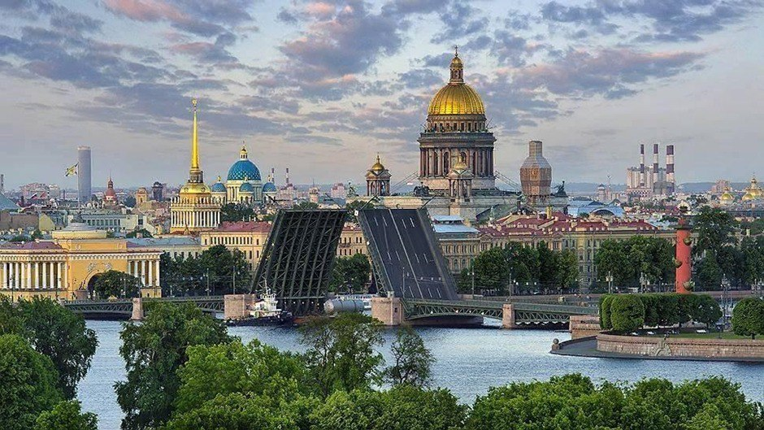
Санкт-Петербу́рг (в 1914—1924 годах — Петрогра́д, в 1924—1991 года — Ленингра́д, разг. — Пи́тер, Петербу́рг, СПб) — второй по численности населения город России. Город федерального значения. Административный центр Северо-Западного федерального округа. Основан 16 (27) мая 1703 года царём Петром I. В 1714—1728 и 1732—1918 годах — столица Российского государства.
Назван в честь святого Петра — небесного покровителя царя-основателя, но со временем стал всё больше ассоциироваться с именем самого Петра I. Город исторически и культурно связан с рождением Российской империи и вхождением России в современную историю в роли европейской великой державы.
Расположен на северо-западе страны на побережье Финского залива и в устье реки Невы. Граничит с Ленинградской областью, также имеет морские границы с Финляндией и Эстонией.
Санкт-Петербург — важный экономический, научный и культурный центр России, крупный транспортный узел. Исторический центр города и связанные с ним комплексы памятников входят в список объектов всемирного наследия ЮНЕСКО.
Население: 5 597 763 (2024) человек. Санкт-Петербург — самый северный в мире город с населением более миллиона человек. Также Санкт-Петербург является самым западным городом-миллионником России.
Санкт-Петербург расположен на северо-западе Российской Федерации в Приневской низменности, на побережье Невской губы Финского залива. Основная водная магистраль – река Нева, с многочисленными рукавами и каналами. Протяженность всех водотоков достигает 282 км, водная поверхность составляет около 7% площади города. За время строительства многие водоемы загрязнились и засыпались, сокращая количество островов с 101 до 42. Через город перекинуто около 800 мостов, самый длинный – Большой Обуховский мост. Город подвержен наводнениям, наиболее значительные произошли в 1824 и 1924 годах. Последнее опасное наводнение было в 2010 году. В 2011 году введен в эксплуатацию комплекс защитных сооружений от наводнений, который предотвратил 26 наводнений с ущербом на 120 миллиардов рублей.
Климат Ленинградской области умеренный, переходный от умеренно континентального к умеренно морскому, что обусловлено географическим положением и атмосферной циркуляцией. В городе в среднем 62 солнечных дня в год, с облачной погодой на протяжении большей части года. Продолжительность дня варьируется от 5 часов 51 минуты 22 декабря до 18 часов 50 минут 22 июня. Наблюдаются Белые ночи с 25—26 мая до 16—17 июля. Петербургские метеостанции имеют данные с 1722 года. Максимальная температура: +37,1 °C, минимальная: −35,9 °C.
Пребывание человека на территории Санкт-Петербурга началось около 12 тысяч лет назад после таяния ледника. В IX веке земли стали частью Древнерусского государства и вошли в состав Великого Новгорода. В VIII—XIII веках проходил водный путь «из варяг в греки». В 1240 году произошло сражение при Ижоре, после чего шведы построили крепость Ландскрона в 1300 году, но она была разрушена новгородцами. В XV веке Ижорская земля присоединилась к Московскому княжеству. После Столбовского мира 1617 года эти земли стали частью Шведской Ингерманландии. Долина Невы была отвоевана Россией в ходе Северной войны, и 16 мая 1703 года был основан Санкт-Петербург, с закладкой Петропавловской крепости. В первой четверти XVIII века название записывалось как Санкт-Питер-Бурх. В 1712 году Пётр I издал указ о создании Генерального плана города, и Санкт-Петербург стал столицей Российской империи. В 1719 году открыта инженерная школа, а в 1724 году перевезён Монетный двор. К 1725 году были построены важные предприятия и здания. В 1809 году был открыт Институт корпуса инженеров путей сообщения, а в 1810 — высшее инженерное образование. В Санкт-Петербурге произошло значительное наводнение 7 (19) ноября 1824 года с гибелью от 400 до 4000 человек. 14 (26) декабря 1825 года на Сенатской площади состоялась неудачная попытка переворота. В первой половине XIX века завершилось оформление архитектурных ансамблей города; среди архитекторов были К. И. Росси, Дж. Кваренги, А. Н. Воронихин и О. Монферран. К середине 1830-х годов в городе действовало около 300 фабрик, а к концу столетия — более 500 предприятий. В 1800 году на заводах появилась первая паровая машина, а в 1815 — первый русский пароход. В 1851 году ушёл первый поезд из Петербурга в Москву. С 1863 года строился водопровод, а в 1885 году завершили строительство Морского канала. В 1907 году появился электрический трамвай. К 1913 году объём промышленного производства достиг 632 миллионов рублей, а к 1914 году в городе обучалось около 40 тысяч студентов. Первая мировая война привела к переименованию Санкт-Петербурга в Петроград в августе 1914 года. В 1917 году начались проблемы со снабжением, что способствовало Февральской революции и отречению Николая II. Власть перешла к большевикам после Октябрьской революции. 5 марта 1918 года Петроград утратил столичный статус, правительство В. И. Ленина переехало в Москву. 26 января 1924 года город был переименован в Ленинград. Население сократилось до 722 тыс. человек в 1920 году. В 1930-х годах началось благоустройство, строительством жилых кварталов и культурных учреждений. С 8 сентября 1941 года началась блокада Ленинграда, которая длилась почти 900 дней и унесла от 600 тыс. до 1,5 миллиона жизней, в основном от голода. Блокада была прорвана 18 января 1943 года и полностью снята 27 января 1944 года. После войны началось восстановление города, в 1951 году принят новый генеральный план, развивающий территорию вокруг исторического центра. В 1950-х годах появилось множество новых архитектурных ансамблей. 15 ноября 1955 года сдана в эксплуатацию первая очередь ленинградского метрополитена. В 1957 году возобновлена традиция полуденного выстрела с Нарышкина бастиона, а на Марсовом поле зажжён первый официальный Вечный огонь. В 1957 году спущен на воду первый атомный ледокол «Ленин», а в 1962 году начат выпуск тракторов «Кировец». В 1960 году открыт Мемориал жертв блокады, в 1962 году построена 316-метровая телебашня. С начала 1960-х началась массовая застройка домами-хрущёвками. В 1965 году Ленинграду присвоено звание Город-Герой. В 1990 году исторический центр города стал объектом Всемирного наследия ЮНЕСКО. В 1991 году вернули название Санкт-Петербург. В 1993 году во время референдума 75 % жителей проголосовали за республиканский статус, который не был получен. В 1994 году состоялись Игры доброй воли. В 2003 году отпраздновали 300-летие города. С 1997 года проводится Петербургский международный экономический форум. В 2011 году губернатором стал Георгий Полтавченко, а в 2019 году — Александр Беглов. В 2017 году на стадионе «Крестовский» в Санкт-Петербурге проводились матчи группового этапа и финал Кубка конфедераций ФИФА. В 2018 году здесь состоялись игры чемпионата мира по футболу, включая матчи группового этапа, ⅛ финала, полуфинал и матч за третье место. С 2017 года, по указу Президента России, в Санкт-Петербурге восстановлена традиция проведения Главного военно-морского парада на Неве в День Военно-Морского Флота. 25 июля 2021 года в параде участвовало 39 кораблей, 7 подводных лодок, 48 воздушных судов и свыше 4 тысяч военнослужащих. В 2021 году город также принимал матчи Чемпионата Европы по футболу 2020 года, где прошли игры группового этапа и один матч ¼ финала. Все матчи проводились на Газпром Арене.
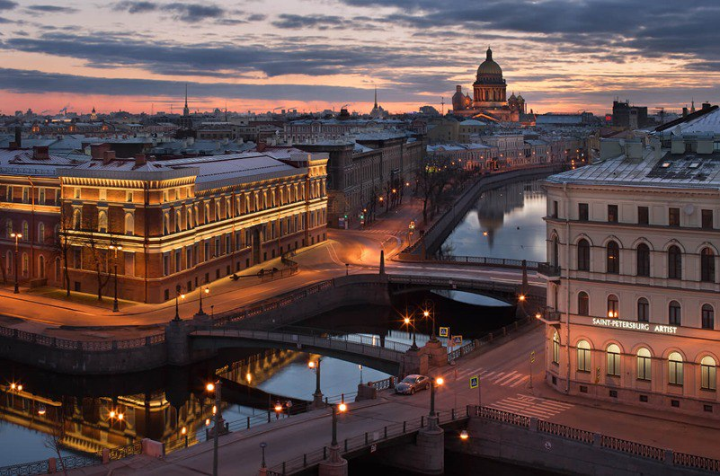
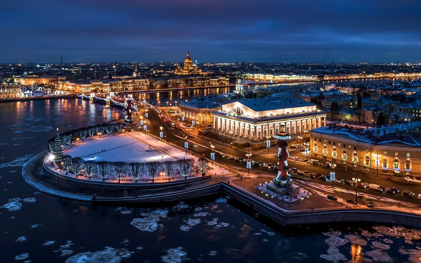
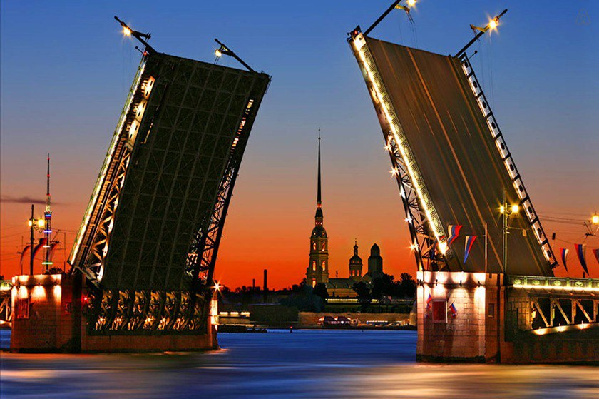
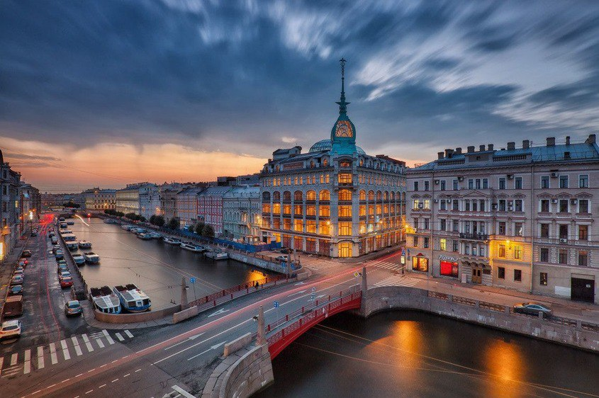
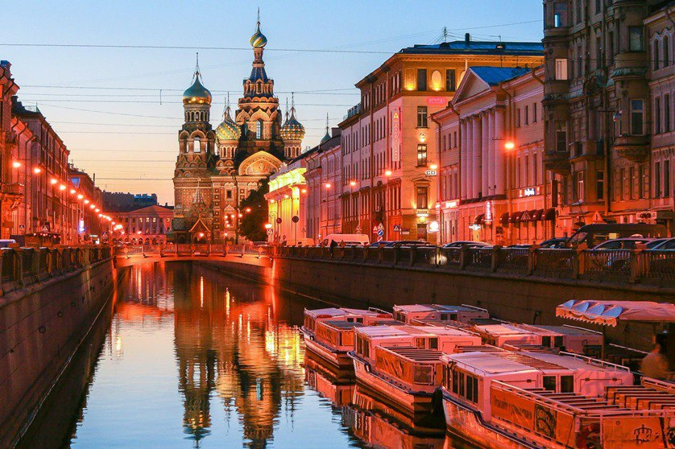
| Эрмитаж |
Российский государственный художественный и культурно-исторический музей в Санкт-Петербурге, одно из крупнейших в мире учреждений подобного рода. Главный музейный комплекс расположен в историческом центре Санкт-Петербурга, включает в себя шесть связанных между собой зданий — Зимний дворец, Запасной дом Зимнего дворца, Малый Эрмитаж, Большой (Старый) Эрмитаж, Новый Эрмитаж и Эрмитажный театр. В них открыты для посещения 365 залов. Коллекция музея насчитывает около трёх миллионов произведений искусства и памятников мировой культуры, собранных начиная с каменного века и до нашего столетия. В её составе — живопись, графика, скульптура и предметы прикладного искусства, археологические находки и нумизматический материал. 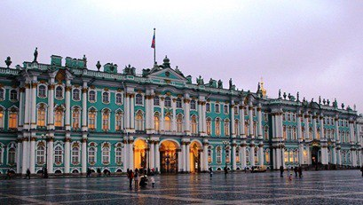 |
|---|---|
| Спас на Крови |
Православный храм-памятник в Санкт-Петербурге. Возведён на месте, где 1 марта 1881 года в результате покушения был смертельно ранен император Александр II. Храм был возведён по указу императора Александра III в 1883–1907 годах по совместному проекту архитектора Альфреда Парланда и архимандрита Игнатия (Малышева). В настоящее время храм имеет статус музея, входит в музейный комплекс Государственный музей-памятник «Исаакиевский собор». 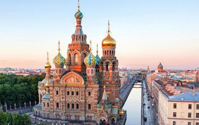 |
| Казанский собор |
Один из крупнейших храмов Санкт-Петербурга. Он был построен на Невском проспекте в 1801–1811 годах архитектором Андреем Воронихиным в стиле русского классицизма для хранения чтимого списка чудотворной иконы Божией Матери Казанской. После Отечественной войны 1812 года собор приобрёл значение памятника русской воинской славы. В 1813 году здесь был похоронен полководец Михаил Илларионович Кутузов и помещены ключи от взятых городов и другие военные трофеи. В 1932 году собор был превращён в Музей истории религии и атеизма. С 1991 года он стал действующим храмом. С 2000 года Казанский собор — кафедральный собор Санкт-Петербургской епархии Русской православной церкви. 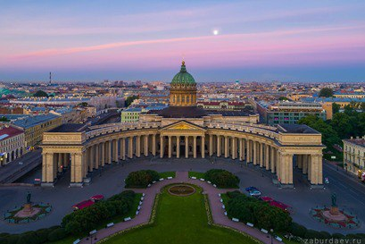 |
| Исаакиевский собор |
Самый известный и крупный храм Санкт-Петербурга, выдающийся пример русской религиозной архитектуры. Это одно из самых значительных и красивых купольных зданий во всём мире. Монументальность собора подчёркнута его квадратным построением. Цоколь облицован гранитом, а стены — серыми мраморными блоками толщиной около 40–50 см. С четырёх сторон Исаакиевский собор обрамляют могучие восьмиколонные портики, украшенные статуями и барельефами. Над собором высится золочёный купол на барабане, окружённом гранитными колоннами. Снаружи здание декорировано серыми мраморными колоннами, а каждый из четырёх фасадов украшен неповторимыми скульптурными сюжетами. Общий стиль относится к классицизму позднего периода с элементами неоренессанса, эклектики, византийского направления. Здесь устроено сразу три алтаря. Главный из них посвящён Исаакию Далматскому, правый — Александру Невскому, левый — Мученице Екатерине. Интерьерные плоскости отделаны ценными породами камня: малахитом, мрамором, лазуритом, алевролитовым сланцем, шунгитом и так далее. На высоте 43 метров находится смотровая площадка, откуда хорошо просматривается историческая часть Санкт-Петербурга. 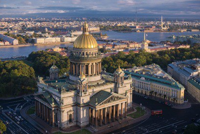 |
| Медный всадник |
Монументальный конный памятник первому российскому императору Петру Великому, созданный в 1768–1778 годах под руководством французского скульптора Этьена Мориса Фальконе. Памятник расположен на Сенатской площади в Санкт-Петербурге. На огромной скале, которая называется Гром-камень, встаёт на дыбы конь, на нём без седла сидит Пётр Первый. Император протягивает вперёд правую руку, а его конь копытом топчет ядовитого змея. Название «Медный всадник» памятник получил благодаря одноимённой поэме А. С. Пушкина, хотя монумент изготовлен из бронзы. 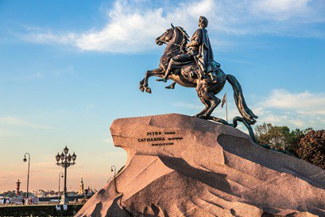 |
| Ростральные колонны |
Архитектурные сооружения в центре Санкт-Петербурга на Стрелке Васильевского острова. В XIX веке выполняли функцию фонарей порта столицы. Две ростральные колонны были возведены в 1805–1810 годах по проекту французского архитектора Тома де Томона. Это олицетворение показывало мощь и величие морского флота государства. У подножия колонн расположены две мужские и две женские фигуры. Согласно распространённой гипотезе, они аллегорически представляют великие реки России: у северной колонны — Волга и Днепр, у южной — Нева и Волхов. Внутри каждой колонны имеется винтовая лестница, ведущая на верхнюю смотровую площадку с огромной чашей-светильником. В чашу до 1896 года заливали конопляное масло, дающее огненный столб, указывающий путь кораблям во мраке ночи или пелене тумана. В 1957 году к светильникам подвели газ и теперь, в наши дни, их зажигают только по особо торжественным случаям. 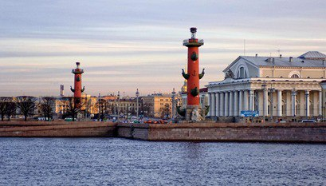 |
| Петропавловская крепость |
Старейший памятник архитектуры Санкт-Петербурга, расположена на Заячьем острове. Дата закладки крепости — 16 (27) мая 1703 года — считается датой основания Санкт-Петербурга. Доминанта крепости — высокий Петропавловский собор с ангелом на шпиле. Внутри собора находятся мраморные гробницы российских императоров и императриц, среди которых усыпальница Петра I. На территории крепости можно посетить, например:
С 1924 года в крепости функционирует государственный музей. В фондах музея истории города хранятся более полутора миллионов экспонатов из истории Санкт-Петербурга. 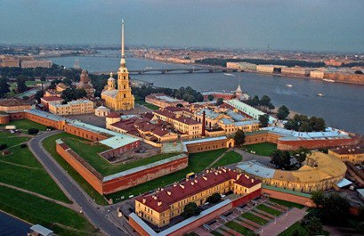 |
Гимн Державный град, возвышайся над Невою,
Как дивный храм, ты сердцам открыт!
Сияй в веках красотой живою,
Дыханье твое Медный всадник хранит.
Несокрушим - ты смог в года лихие
Преодолеть все бури и ветра!
С морской душой, Бессмертен, как Россия,
Плыви, фрегат, под парусом Петра!
Санкт-Петербург, оставайся вечно молод!
Грядущий день озарен тобой.
Так расцветай, наш прекрасный город!
Высокая честь - жить единой судьбой!